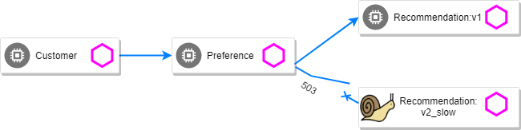
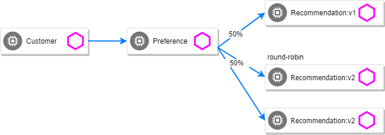

Circuit Breaker
Fail Fast with Max Connections and Max Pending Requests
For this scenario, we will equally split the traffic between recommendation v1 and the slow version of v2 :
Deploy the slow version of recommendation:v2 making it a slow performer with a 3 second delay.
kubectl apply -f manifests/kubernetes/recommendation-v2_slow.ymlCreate the v1 and v2 subsets.
kubectl apply -f manifests/istio/routing-simple/recommendation-destination-rule-v1-v2.ymlCreate the virtual service that splits traffic equally between v1 and V2
kubectl apply -f manifests/istio/circuit-breaker/fail-fast/recommendation-virtual-service-v1_and_v2_50_50.ymlkind: VirtualService
metadata:
name: recommendation
spec:
hosts:
- recommendation
http:
- route:
- destination:
host: recommendation
subset: version-v1
weight: 50
- destination:
host: recommendation
subset: version-v2
weight: 50Test 1: Load test without circuit breaker
Let’s perform a load test in our system with siege. We’ll have 20 clients sending 2 concurrent requests each:
docker run lonelyplanet/siege siege -r 2 -c 20 -v $CUSTOMER_URLYou should see an output similar to this:

All of the requests to our system were successful, but it took some time to run the test, as the v2 instance was a slow performer.
|
Test 2: Load test with circuit breaker
Suppose that in a production system this 3s delay was caused by too many concurrent requests to the same instance. We don’t want multiple requests getting queued or making the instance even slower. So we’ll add a circuit breaker that will open whenever we have more than 1 request being handled by any instance.
kubectl apply -f manifests/istio/circuit-breaker/fail-fast/recommendation-destination-rule-cb_policy_version.ymlkind: DestinationRule
...
spec:
host: recommendation
subsets:
- name: version-v1
labels:
version: v1
- name: version-v2
labels:
version: v2
trafficPolicy:
connectionPool:
http:
http1MaxPendingRequests: 1
maxRequestsPerConnection: 1
tcp:
maxConnections: 1Now let’s see what is the behavior of the system running siege again:
docker run lonelyplanet/siege siege -r 2 -c 20 -v $CUSTOMER_URL

You can run siege multiple times, but in all of the executions you should see some 503 errors being displayed in the results. That’s the circuit breaker being opened whenever Istio detects more than 1 pending request being handled by the instance.
Pool Ejection
Pool ejection or outlier detection is a resilience strategy that takes place whenever we have a pool of instances/pods to serve a client request. If the request is forwarded to a certain instance and it fails (e.g. returns a 50x error code), then Istio will eject this instance from the pool for a certain sleep window. In our example the sleep window is configured to be 15s. This increases the overall availability by making sure that only healthy pods participate in the pool of instances.
First, you need to insure you have a destinationrule and virtualservice in place to send traffic to the services. Let’s use a 50/50 split of traffic:

kubectl apply -f manifests/istio/routing-simple/recommendation-destination-rule-v1-v2.yml
kubectl apply -f manifests/istio/circuit-breaker/fail-fast/recommendation-virtual-service-v1_and_v2_50_50.ymlScale number of instances of v2 deployment
kubectl scale deployment recommendation-v2 --replicas=2Wait for all the pods to be in the ready state.
Test 1: Load test without failing instances
Throw some requests at the customer endpoint:
while true; do curl $CUSTOMER_URL; sleep .5; doneYou will see the load balancing 50/50 between the two different versions of the recommendation service. And within version v2, you will also see that some requests are handled by one pod and some requests are handled by the other pod.
customer => preference => recommendation v1 from '2039379827-jmm6x': 447
customer => preference => recommendation v2 from '2036617847-spdrb': 26
customer => preference => recommendation v1 from '2039379827-jmm6x': 448
customer => preference => recommendation v2 from '2036617847-spdrb': 27
customer => preference => recommendation v1 from '2039379827-jmm6x': 449
customer => preference => recommendation v1 from '2039379827-jmm6x': 450
customer => preference => recommendation v2 from '2036617847-spdrb': 28
customer => preference => recommendation v1 from '2039379827-jmm6x': 451
customer => preference => recommendation v1 from '2039379827-jmm6x': 452
customer => preference => recommendation v2 from '2036617847-spdrb': 29
customer => preference => recommendation v2 from '2036617847-spdrb': 30
customer => preference => recommendation v2 from '2036617847-hdjv2': 216
customer => preference => recommendation v1 from '2039379827-jmm6x': 453
customer => preference => recommendation v2 from '2036617847-spdrb': 31
customer => preference => recommendation v2 from '2036617847-hdjv2': 217
customer => preference => recommendation v2 from '2036617847-hdjv2': 218
customer => preference => recommendation v1 from '2039379827-jmm6x': 454
customer => preference => recommendation v1 from '2039379827-jmm6x': 455
customer => preference => recommendation v2 from '2036617847-hdjv2': 219
customer => preference => recommendation v2 from '2036617847-hdjv2': 220Test 2: Load test with failing instance
Let’s get the name of the pods from recommendation v2:
kubectl get pods -l app=recommendation,version=v2You should see something like this:
NAME READY STATUS RESTARTS AGE
recommendation-v2-777598bdc4-d97p7 2/2 Running 0 2m
recommendation-v2-777598bdc4-kr7rt 2/2 Running 0 51mNow we’ll get into one the pods and add some erratic behavior on it. Get one of the pod names from your system and replace on the following command accordingly:
kubectl exec -it $(kubectl get pods|grep recommendation-v2|awk '{ print $1 }'|head -1) -c recommendation -- curl 127.0.0.1:8080/misbehave
Output: Following requests to '/' will return a 503This is a special endpoint that will make our application return only 503s.
The error rate is 25 %. Because 1/2 of v2 is in error, v2 is 50% of traffic, hence 1/2 of 50% is in error which is equal to 25%.

Throw some requests at the customer endpoint:
while true; do curl $CUSTOMER_URL; sleep .5; doneYou’ll see that whenever the pod recommendation-v2-2036617847-spdrb receives a request, you get a 503 error:
customer => preference => recommendation v1 from '2039379827-jmm6x': 494
customer => preference => recommendation v1 from '2039379827-jmm6x': 495
customer => preference => recommendation v2 from '2036617847-hdjv2': 248
customer => preference => recommendation v1 from '2039379827-jmm6x': 496
customer => preference => recommendation v1 from '2039379827-jmm6x': 497
customer => 503 preference => 503 recommendation misbehavior from '2036617847-spdrb'
customer => preference => recommendation v2 from '2036617847-hdjv2': 249
customer => preference => recommendation v1 from '2039379827-jmm6x': 498
customer => 503 preference => 503 recommendation misbehavior from '2036617847-spdrb'
customer => preference => recommendation v2 from '2036617847-hdjv2': 250
customer => preference => recommendation v1 from '2039379827-jmm6x': 499
customer => preference => recommendation v1 from '2039379827-jmm6x': 500
customer => 503 preference => 503 recommendation misbehavior from '2036617847-spdrb'
customer => preference => recommendation v1 from '2039379827-jmm6x': 501
customer => preference => recommendation v2 from '2036617847-hdjv2': 251
customer => 503 preference => 503 recommendation misbehavior from '2036617847-spdrb'Test 3: Load test with failing instance and with pool ejection
Now let’s add the pool ejection behavior:
kubectl apply -f manifests/istio/circuit-breaker/pool-ejection/recommendation-destination-rule-cb_policy_pool_ejection.ymlkind: DestinationRule
...
spec:
host: recommendation
subsets:
...
- labels:
version: v2
name: version-v2
trafficPolicy:
connectionPool:
http: {}
tcp: {}
loadBalancer:
simple: RANDOM
outlierDetection:
baseEjectionTime: 15.000s
consecutiveErrors: 1
interval: 5.000s
maxEjectionPercent: 100Throw some requests at the customer endpoint:
while true; do curl $CUSTOMER_URL; sleep .5; doneYou will see that whenever you get a failing request with 503 from the pod recommendation-v2-2036617847-spdrb, it gets ejected from the pool, and it doesn’t receive any more requests until the sleep window expires - which takes at least 15s.
The number of errors dropped significantly but we still have erros.
customer => preference => recommendation v1 from '2039379827-jmm6x': 509
customer => 503 preference => 503 recommendation misbehavior from '2036617847-spdrb'
customer => preference => recommendation v1 from '2039379827-jmm6x': 510
customer => preference => recommendation v1 from '2039379827-jmm6x': 511
customer => preference => recommendation v1 from '2039379827-jmm6x': 512
customer => preference => recommendation v1 from '2039379827-jmm6x': 513
customer => preference => recommendation v1 from '2039379827-jmm6x': 514
customer => preference => recommendation v2 from '2036617847-hdjv2': 256
customer => preference => recommendation v2 from '2036617847-hdjv2': 257
customer => preference => recommendation v1 from '2039379827-jmm6x': 515
customer => preference => recommendation v2 from '2036617847-hdjv2': 258
customer => preference => recommendation v2 from '2036617847-hdjv2': 259
customer => preference => recommendation v2 from '2036617847-hdjv2': 260
customer => preference => recommendation v1 from '2039379827-jmm6x': 516
customer => preference => recommendation v1 from '2039379827-jmm6x': 517
customer => preference => recommendation v1 from '2039379827-jmm6x': 518
customer => 503 preference => 503 recommendation misbehavior from '2036617847-spdrb'
customer => preference => recommendation v1 from '2039379827-jmm6x': 519
customer => preference => recommendation v1 from '2039379827-jmm6x': 520
customer => preference => recommendation v1 from '2039379827-jmm6x': 521
customer => preference => recommendation v2 from '2036617847-hdjv2': 261
customer => preference => recommendation v2 from '2036617847-hdjv2': 262
customer => preference => recommendation v2 from '2036617847-hdjv2': 263
customer => preference => recommendation v1 from '2039379827-jmm6x': 522
customer => preference => recommendation v1 from '2039379827-jmm6x': 523
customer => preference => recommendation v2 from '2036617847-hdjv2': 264
customer => preference => recommendation v1 from '2039379827-jmm6x': 524
customer => preference => recommendation v1 from '2039379827-jmm6x': 525
customer => preference => recommendation v1 from '2039379827-jmm6x': 526
customer => preference => recommendation v1 from '2039379827-jmm6x': 527
customer => preference => recommendation v2 from '2036617847-hdjv2': 265
customer => preference => recommendation v2 from '2036617847-hdjv2': 266
customer => preference => recommendation v1 from '2039379827-jmm6x': 528
customer => preference => recommendation v2 from '2036617847-hdjv2': 267
customer => preference => recommendation v2 from '2036617847-hdjv2': 268
customer => preference => recommendation v2 from '2036617847-hdjv2': 269
customer => 503 preference => 503 recommendation misbehavior from '2036617847-spdrb'
customer => preference => recommendation v1 from '2039379827-jmm6x': 529
customer => preference => recommendation v2 from '2036617847-hdjv2': 270Test 4: Ultimate resilience with retries, circuit breaker, and pool ejection
Even with pool ejection your application doesn’t look that resilient. That’s probably because we’re still letting some errors to be propagated to our clients. But we can improve this. If we have enough instances and/or versions of a specific service running into our system, we can combine multiple Istio capabilities to achieve the ultimate backend resilience:
-
Circuit Breaker to avoid multiple concurrent requests to an instance;
-
Pool Ejection to remove failing instances from the pool of responding instances;
-
Retries to forward the request to another instance just in case we get an open circuit breaker and/or pool ejection;
By simply adding a retry configuration to our current virtualservice, we’ll be able to get rid completely of our 503s requests. This means that whenever we receive a failed request from an ejected instance, Istio will forward the request to another supposably healthy instance.

kubectl apply -f manifests/istio/fault-injection/retry/recommendation-virtual-service-v2_retry.ymlkind: VirtualService
...
spec:
hosts:
- recommendation
http:
- retries:
attempts: 3
perTryTimeout: 4.000s
route:
- destination:
host: recommendation
subset: version-v1
weight: 50
- destination:
host: recommendation
subset: version-v2
weight: 50Throw some requests at the customer endpoint:
while true; do curl $CUSTOMER_URL; sleep .5; doneYou won’t receive 503`s anymore. But the requests from recommendation `v2 are still taking more time to get a response:
customer => preference => recommendation v1 from '2039379827-jmm6x': 538
customer => preference => recommendation v1 from '2039379827-jmm6x': 539
customer => preference => recommendation v1 from '2039379827-jmm6x': 540
customer => preference => recommendation v2 from '2036617847-hdjv2': 281
customer => preference => recommendation v1 from '2039379827-jmm6x': 541
customer => preference => recommendation v2 from '2036617847-hdjv2': 282
customer => preference => recommendation v1 from '2039379827-jmm6x': 542
customer => preference => recommendation v1 from '2039379827-jmm6x': 543
customer => preference => recommendation v1 from '2039379827-jmm6x': 544
customer => preference => recommendation v2 from '2036617847-hdjv2': 283
customer => preference => recommendation v2 from '2036617847-hdjv2': 284
customer => preference => recommendation v1 from '2039379827-jmm6x': 545
customer => preference => recommendation v1 from '2039379827-jmm6x': 546
customer => preference => recommendation v1 from '2039379827-jmm6x': 547
customer => preference => recommendation v2 from '2036617847-hdjv2': 285
customer => preference => recommendation v2 from '2036617847-hdjv2': 286
customer => preference => recommendation v1 from '2039379827-jmm6x': 548
customer => preference => recommendation v2 from '2036617847-hdjv2': 287
customer => preference => recommendation v2 from '2036617847-hdjv2': 288
customer => preference => recommendation v1 from '2039379827-jmm6x': 549
customer => preference => recommendation v2 from '2036617847-hdjv2': 289
customer => preference => recommendation v2 from '2036617847-hdjv2': 290
customer => preference => recommendation v2 from '2036617847-hdjv2': 291
customer => preference => recommendation v2 from '2036617847-hdjv2': 292
customer => preference => recommendation v1 from '2039379827-jmm6x': 550
customer => preference => recommendation v1 from '2039379827-jmm6x': 551
customer => preference => recommendation v1 from '2039379827-jmm6x': 552
customer => preference => recommendation v1 from '2039379827-jmm6x': 553
customer => preference => recommendation v2 from '2036617847-hdjv2': 293
customer => preference => recommendation v2 from '2036617847-hdjv2': 294
customer => preference => recommendation v1 from '2039379827-jmm6x': 554Our misbehaving pod recommendation-v2-2036617847-spdrb never shows up in the console, thanks to pool ejection and retry.